A doctor who speaks your language, on the first try
Hallo Doc is a concept for newcomers in Berlin. It answers the three questions people have before they ever book: which doctor do I need, will they understand me, and will they take me as a new patient?
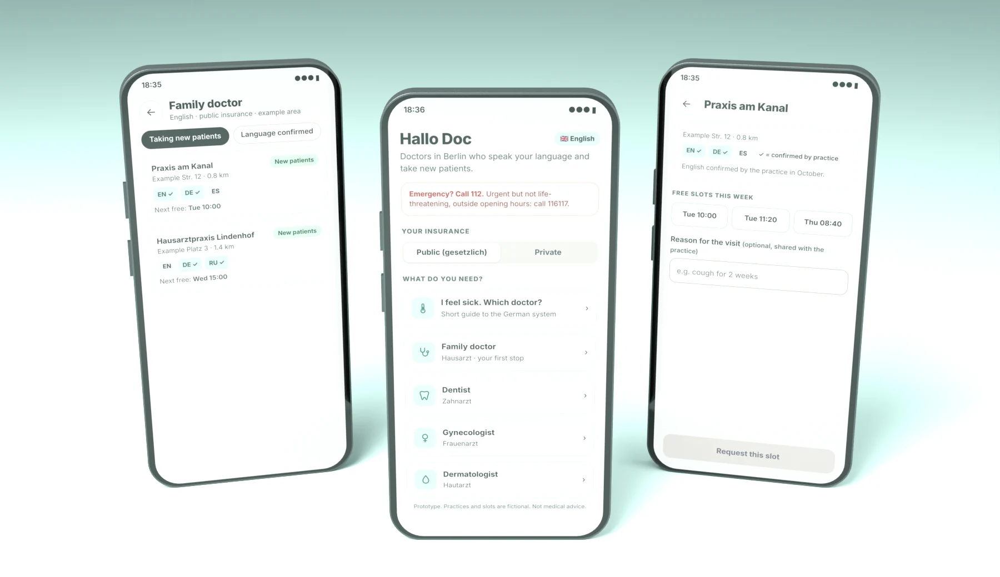
Problem
Booking a doctor online is solved. Finding one who speaks your language, takes your insurance and accepts new patients is not. Information is scattered and often out of date.
Solution
A mobile app that starts with the need, filters by confirmed language and new-patient status, shows where every piece of information comes from, and sends a slot request.
What I did
Problem framing, assumptions and a research plan, a proto-persona and journey, user flow, wireframes, UI and a small design system, edge cases, and a clickable prototype.
Context
Booking is solved. Finding the right door is not.
Germany already has online booking platforms. But a newcomer has questions that come before booking. Do I go to a specialist or to a Hausarzt first? Will someone at the reception speak English, Russian or Arabic? Is this practice taking new patients with public insurance?
The answers are spread over practice websites, Facebook groups and friends' advice. Lists like "English-speaking doctors in Berlin" are often years old. So people call practice after practice, or wait until a small problem becomes an emergency room visit.
How might we help a newcomer reach the right practice on the first try, in a health system they do not know yet?
Assumptions
What I believe, and how I would check it
Before designing screens I wrote down my riskiest assumptions. In a real project, these would decide the first two weeks of research.
| Assumption | Why I think so | How I would test it |
|---|---|---|
| Language matters more than distance | People will travel further for a doctor they can talk to. | Short survey in 3 newcomer groups: rank language, distance and waiting time. |
| Outdated information is the main frustration | "Speaks English" on an old list, then a German-only phone call. | 5 interviews about the last time someone looked for a doctor. |
| Newcomers don't know where to start | The Hausarzt system and referrals are new to many people. | Tree test: 6 everyday problems, which doctor would you choose? |
| Practices will update a simple status | "Taking new patients: yes/no" takes seconds to change. | Talk to 3 practice managers about their week and their tools. |
People
Show detailsHide details
Who I designed for
Mira, 29
UX researcher, moved to Berlin from Kyiv 4 months ago. Public insurance. Good English, beginner German.
“I don't need the best doctor in Berlin. I need one who will understand me and say yes.”
Proto-persona · based on assumptionsGoals
- See a family doctor about a cough that won't go away
- Understand how the system works once, then feel confident
- Avoid phone calls in German
Frustrations
- Lists of English-speaking doctors are out of date
- Practices say "no new patients" only on the phone
- Doesn't know when she needs a referral
Context
- Searches on her phone, often in the evening
- Uses translation apps for letters
- Asks in expat chats first
What would help
- Trustworthy language info
- A clear yes or no on new patients
- Words to use at the reception
Today's journey, before Hallo Doc
| Notices a problem | Searches | Calls practices | Gets a slot | At the practice | |
|---|---|---|---|---|---|
| Doing | Waits a week, hoping it goes away | Googles, asks in a chat, finds a 2021 list | Calls 4 practices, two don't answer | A practice 40 min away says yes | Fills in a German form at reception |
| Thinking | "Which doctor is even right for this?" | "Is this list still true?" | "Did she say no new patients?" | "Finally. But it's far." | "What do I say?" |
| Feeling | |||||
| Opportunity | A short guide to the system | Filters by need, language, insurance | Live new-patient status | Slots shown up front | Phrases and a checklist |
Principles & flow
Show detailsHide details
Three principles that shaped every screen
Every language tag shows its source. A confirmed fact and a patient report look different.
A newcomer learns the Hausarzt rule in one screen, not in ten forum threads.
Emergency numbers sit on the start screen. The app never pretends to diagnose.
User flow
The main path has five steps. The dashed branches are the moments where people usually get stuck today, so they got their own design.
Wireframes to UI
Show detailsHide details
From grey boxes to a calm interface
I started in grayscale to get the hierarchy right without colour. Colour came last and only for meaning: green means confirmed or available.
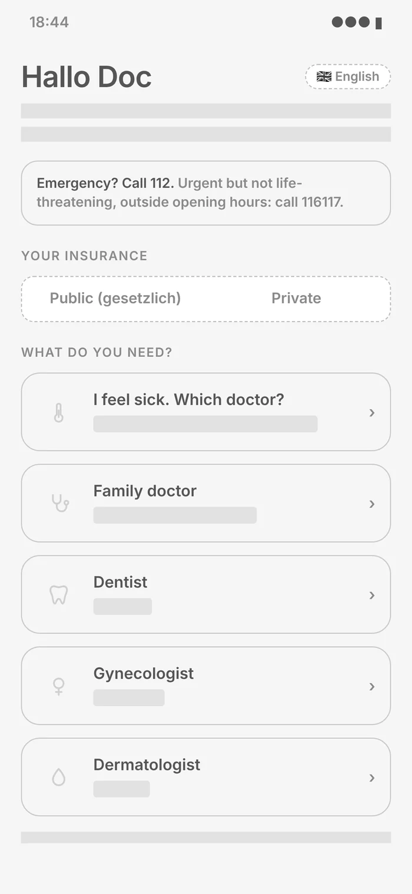
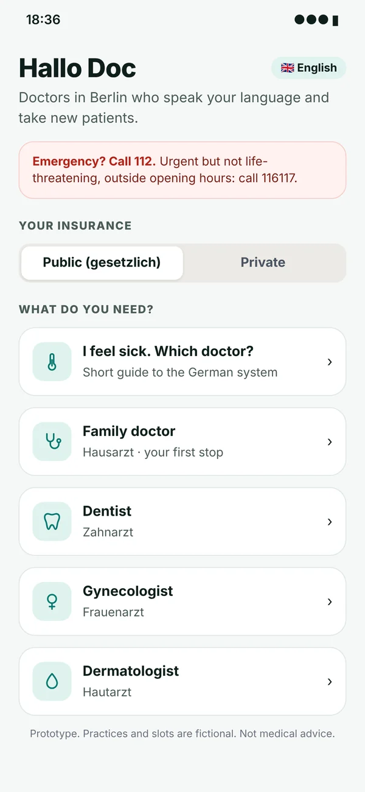
Start with the need, not a search bar
A newcomer often doesn't know the German name of the doctor they need. So the start screen offers plain-language needs with the German term underneath, and the insurance switch sits above them because it changes every result.
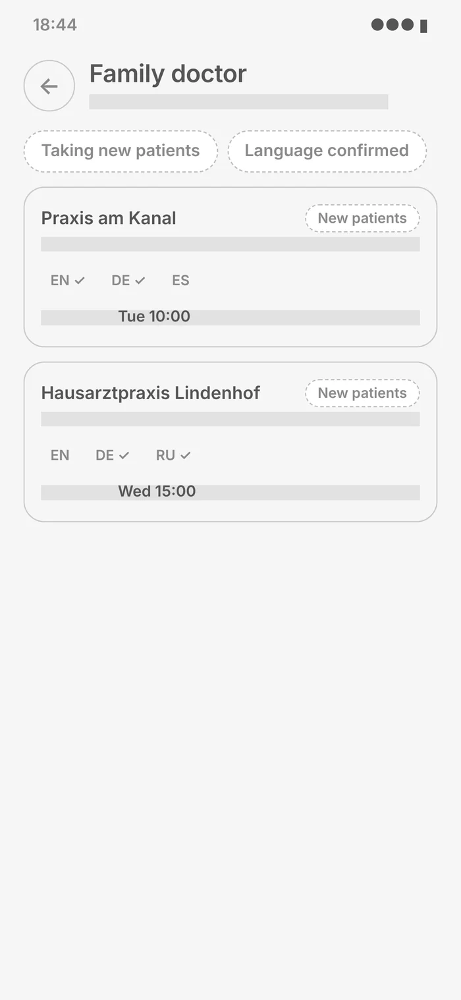
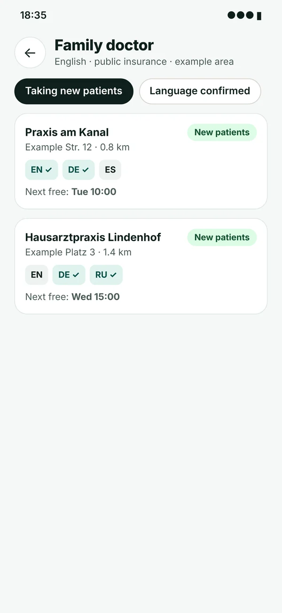
Filters that answer the real questions
"Taking new patients" is on by default, because a practice that says no is a dead end. "Language confirmed" is a choice: some people are fine with a patient report.
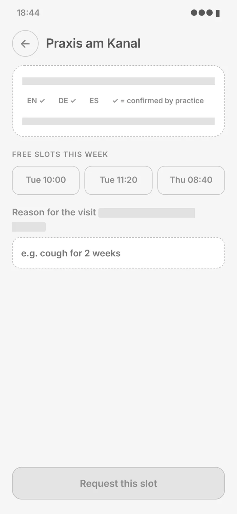
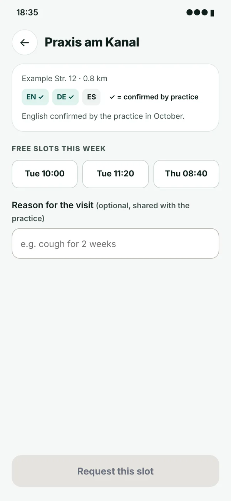
Show where the information comes from
A check mark means the practice itself confirmed the language. The source line says when. Slots are visible before any form, so the request is one tap.
Key decisions
Decisions and the trade-offs behind them
Symptom checker or a system guide?
A checker adds medical risk and liability and would need clinical validation. The real gap is knowing how the system works, not diagnosing.
One language badge or show the source?
Outdated language info is the frustration I assume is biggest. Showing the source lets people judge trust themselves, and gives practices a reason to confirm.
Instant booking or a request?
Instant booking needs integrations with many practice systems. A request is enough to test the core value, and practices keep control.
Design system
Show detailsHide details
A small, quiet design system
Few colours, each with one job. Inter for everything, because it reads well at small sizes and supports Latin and Cyrillic text.
actions, confirmed
confirmed tags, icons
app background
text
secondary text
emergency info
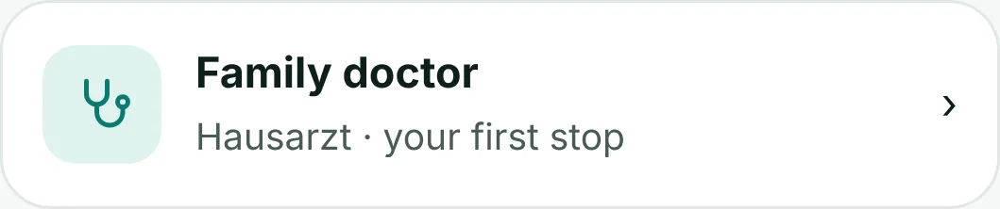
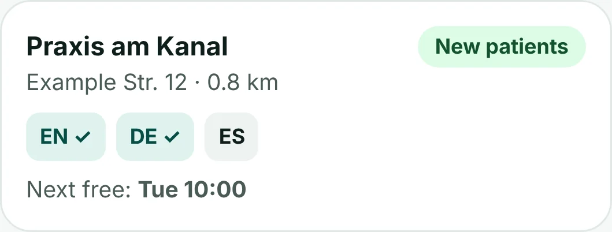
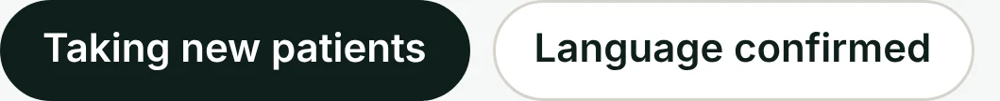
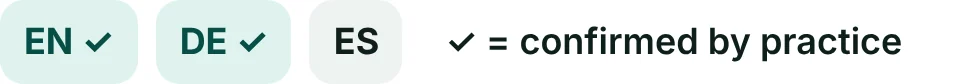
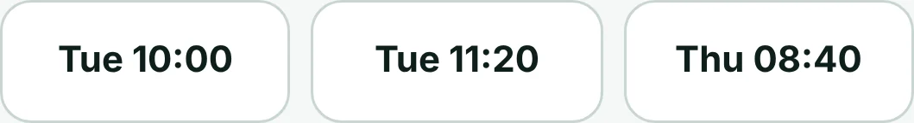
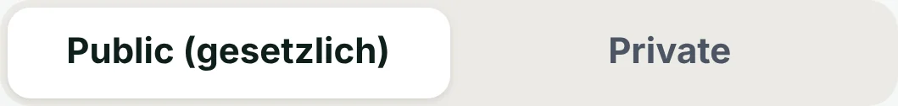
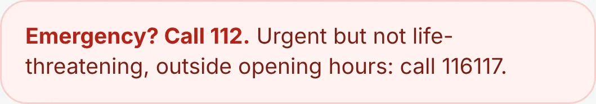
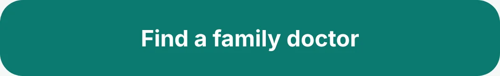
States & access
Show detailsHide details
Edge cases are part of the design
Most health apps look good with perfect data. I designed the moments when the data says no.
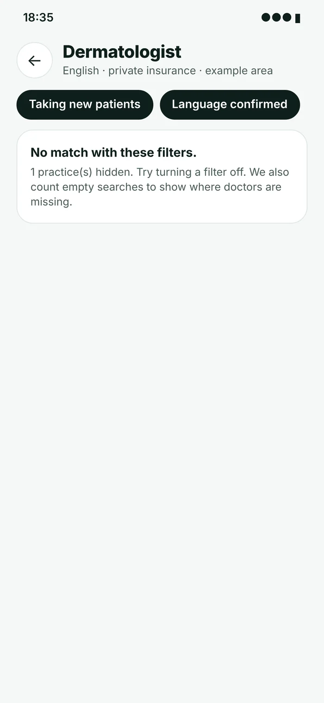
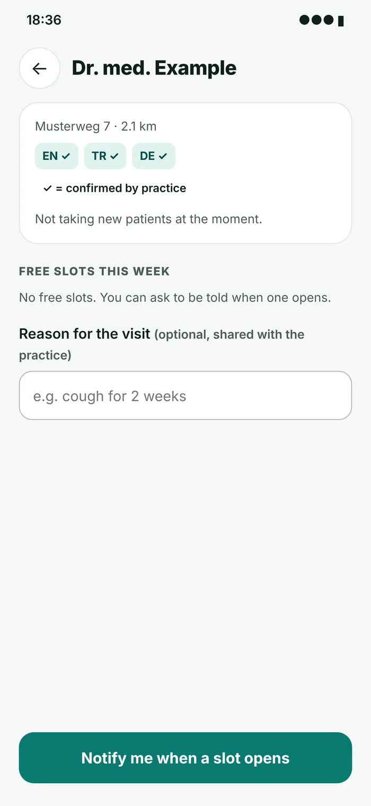
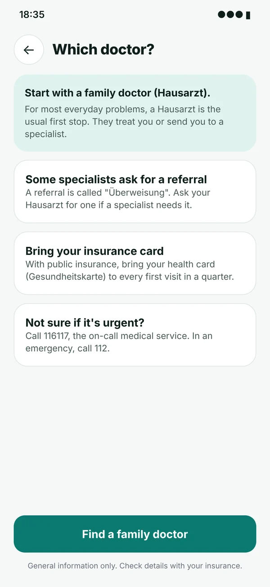
Accessibility
- ContrastText and buttons meet WCAG AA contrast on the light background.
- Not colour aloneConfirmed languages have a ✓ and a legend, not only a green fill.
- Touch targetsAll buttons and chips are at least 44 px high.
- Plain languageShort sentences, German terms always with an explanation, ready for translation.
Final design
The final screens
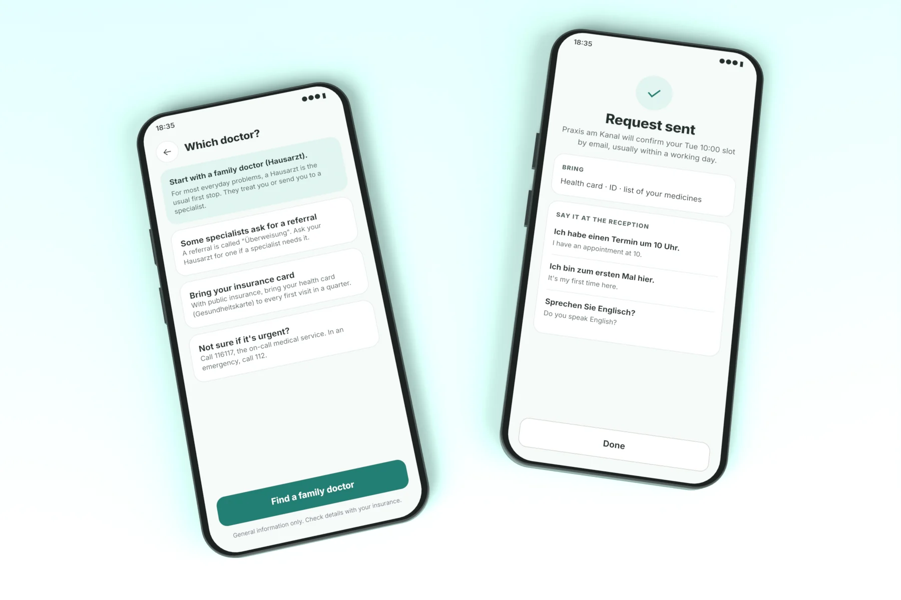
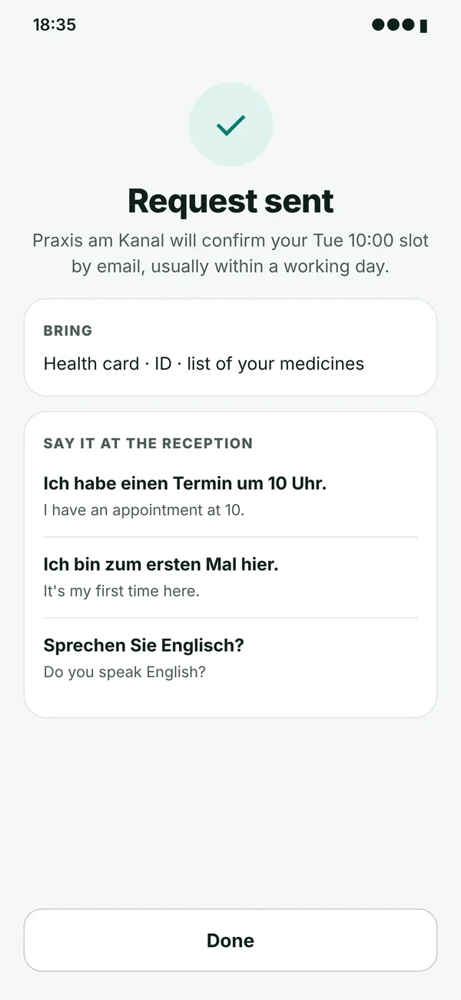
Prototype
Try it yourself
The prototype is built in HTML and works with real interactions: filters, slot selection and the request.
- Tap "I feel sick. Which doctor?" and read the guide
- Find a family doctor and turn on "Language confirmed"
- Open a practice and choose a slot
- Send the request and read the phrases for the reception
Measuring success
What I would measure in a pilot
A pilot with a few partner practices in one district. I would set targets only after a baseline, so there are no numbers here.
| Metric | Why it matters |
|---|---|
| North star: first visits that happened | A request is not a success. A real first appointment is. |
| Request accepted by the practice | If practices often decline, the new-patient data is wrong. |
| Searches with no result | Shows where language or insurance supply is missing. |
| Guardrail: information reported as wrong | Reports like "they don't speak English" must go down over time. |
Reflection
What I learned and what comes next
The most interesting design problem was not the booking. It was trust: how to show information that might be wrong without making the whole app feel unreliable. Showing the source turned out to be simpler and more honest than any badge.
If I continued, I would validate the assumptions first. The biggest risk is on the practice side: if practices don't update their status, the app is just another outdated list.